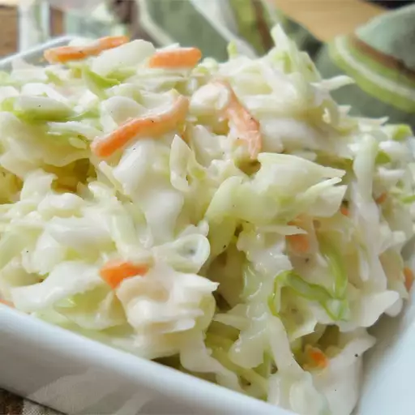

Coleslaw
Home

Restaurant-Style Coleslaw
This delicious recipe turns out slaw just like the famous coleslaw at a popular fried chicken restaurant chain!
Ingredients
- 8 Cups Cabbage
- 1/2 Cup Mayonnaise
- Sugar
- Salt
- Milk
Steps
- In a large bowl, whisk together the sugar, salt, pepper, milk, mayonnaise, buttermilk, vinegar and lemon juice until smooth. Add cabbage and carrots and mix until blended with the dressing. Refrigerate at least 2 hours before serving.